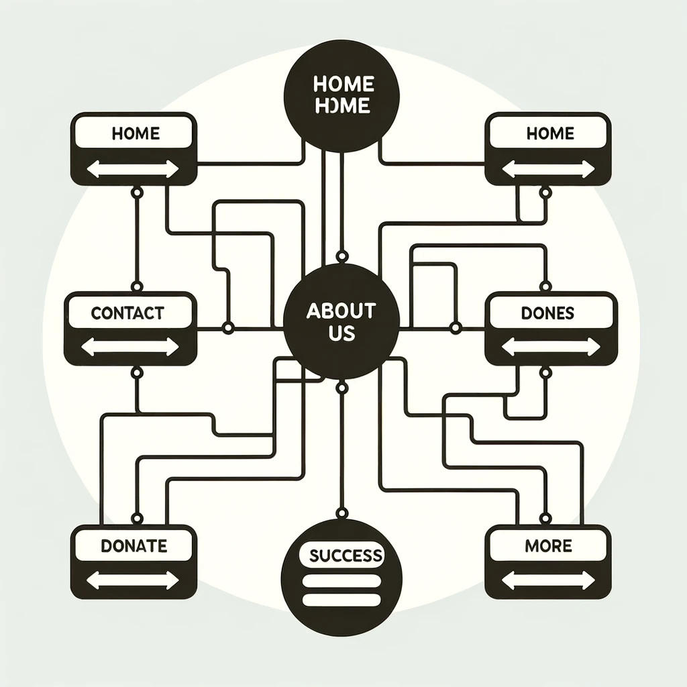

Site Purpose
Uplift is a nonprofit organization committed to providing individuals from deprived homes or towns with easy access to essential resources, focusing on apprenticeship, education, and healthcare. Inspired by our mission to create jobs and empower communities, Uplift invests in a range of programs designed to build, support, and diversify regional economies. Our goal is to uplift lives by offering opportunities for skill development, education, and health support, fostering prosperity and enabling individuals to provide for their families. Through accessible learning initiatives, apprenticeship programs, and healthcare resources, we aim to empower individuals to find work, achieve personal growth, and build a path towards a brighter future.
Wireframe
This provides an indication of the website's layout.
